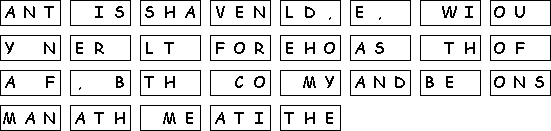
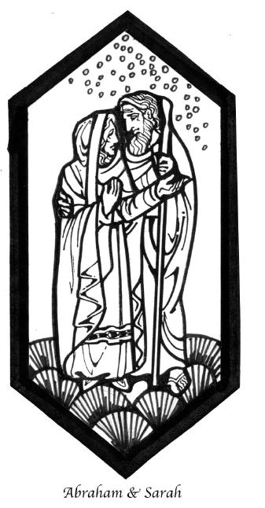

This week's lessons: Genesis 17:1-7, 15-16 , Psalm 22:23-31 , Romans 4:13-25 , Mark 8:31-38 or Mark 9:2-9
This
week's lessons: Genesis
17:1-7, 15-16 , Psalm
22:23-31 , Romans
4:13-25 , Mark
8:31-38 or Mark
9:2-9
Middle-School Pew-work

|
 |
What does “covenant” mean to you? ______________________ ___________________________________________________ What “covenants, or agreements or 'contracts', are you a party to in your daily life?_____________________________________ ___________________________________________________ A covenant means both parties have responsibilities or roles with respect to the other party. What is your part in your covenant with God, and what is God's part? ________________ ____________________________________________________________________________________________________________________________________________________________________________________________________________________________________________________________________________________________________________________________________________________________________________________________________________________________________________________________________________________________________________________________________________________________________________________________________________________________________ |
Next week: Genesis 9:8-37, Psalm 25:3-30 , 3 Peter 3:38-22 , Mark 3:9-35;